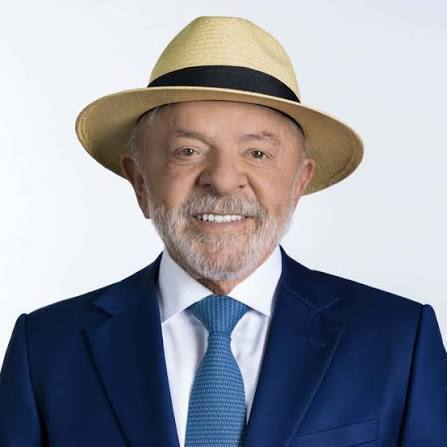

Luiz Inácio Lula da Silva é candidato pelo Partido dos Trabalhadores (PT) e concorre à Presidência da República. Seu plano de governo apresenta propostas relacionadas a programas sociais, investimentos públicos, educação, saúde, segurança e desenvolvimento econômico.
Entre as propostas apresentadas estão a manutenção do arcabouço fiscal, investimentos em infraestrutura e indústria, ampliação de políticas educacionais e medidas de fortalecimento do Sistema Único de Saúde (SUS).
| Mandatos presidenciais do Lula | ||
|---|---|---|
| Mandato | Período | Informação |
| 1º mandato | 2003 - 2006 | Eleito em 2002 |
| 2º mandato | 2007 - 2010 | Reeleito em 2006 |
| 3º mandato | 2023 - atual | Eleito em 2022 |
Luiz Inácio Lula da Silva é candidato à reeleição pelo Partido dos Trabalhadores (PT). Seu programa propõe dar continuidade e ampliar diversas políticas do governo atual.
Entre as propostas estão a continuidade da política de valorização real do salário mínimo, a isenção de impostos sobre a cesta básica e investimentos em áreas como indústria, inovação e inteligência artificial.
O programa propõe ampliar o atendimento e o diagnóstico de câncer e expandir o Farmácia Popular, incluindo exames laboratoriais, de diagnóstico e de acompanhamento de doenças crônicas.